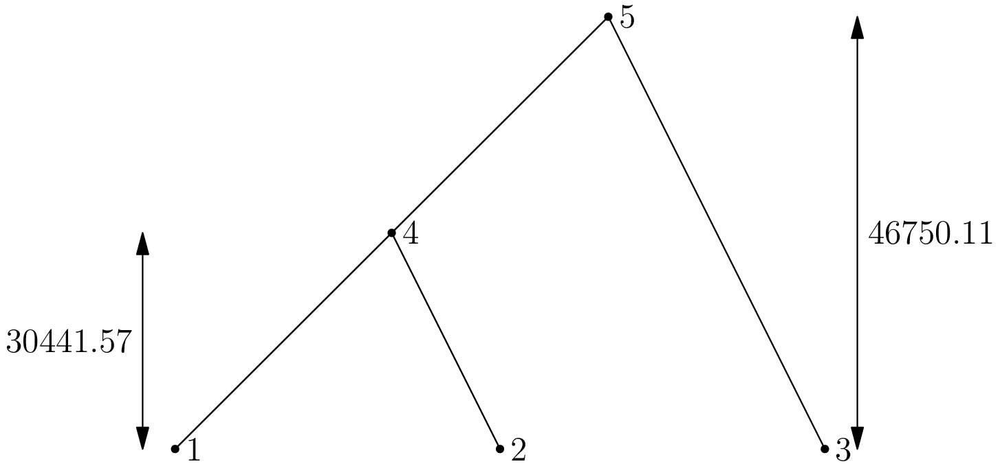

Extinction/recolonisation coalescent simulator¶
Contents
The extinction/recolonisation model (or spatial Lambda-Fleming-Viot process) is a recently-introduced model of populations evolving in continuous space. In this model, individuals occupy a fixed location and all movement and reproduction occur as a result of extinction/recolonisation events. Events fall randomly in space, independent of the location of extant individuals. In each event, some of the nearby individuals die and are replaced by the descendants of a small number of parents, drawn randomly from the population immediately before the event. See [E08], [BEV10], [BKE10] and [BEV12] for discussions of the model, its background, and detailed mathematical results.
This is the documentation for the ercs Python module, which provides a straightforward interface to coalescent simulations for this model. The basic approach to simulating the history of a sample and interpreting the results is explained through a series of straightforward examples in the Introduction section. We then work through a detailed example in the Estimating identity section, which is followed by detailed API documentation for the ercs module.
Introduction¶
Simulating the coalescent for the extinction/recolonisation model using ercs follows a basic pattern:
- Allocate an instance of ercs.Simulator;
- Set the properties of the desired simulation by assigning values to the attributes of this object;
- Run the simulation for a given random seed using the ercs.Simulator.run() method;
- Analyse the resulting genealogies to obtain the information of interest.
In the following examples we look at the parameters of the simulation, the structure of the simulated genealogies (and how we can analyse them) and how we can use these tools to estimate values of interest.
Note
The examples in this section generally assume that Python 3 is being used, and may not work under Python 2. However, both Python 2 and Python 3 are fully supported by ercs.
Basic usage¶
To simulate the history of a set of individuals at a sample of locations on a 2D torus, we first allocate an instance of the ercs.Simulator class. This class has a number of attributes which can be set to describe the parameters of the desired simulation. Most of these parameters have sensible defaults, but we must specify at least three of these before we can run a simulation. Here is a simple example:
import ercs
def first_example(seed):
sim = ercs.Simulator(20)
sim.sample = [None, (0, 0), (0, 5), (0, 10)]
sim.event_classes = [ercs.DiscEventClass(u=0.5, r=1)]
return sim.run(seed)
In this example we allocate a simulator on a torus of diameter 20, and set up our sample and event classes. We then run the simulation and return the resulting genealogy. The size of the torus is rather arbitrary, as the real size of the habitat that we imagine our population evolving on is determined by the scale of events relative to the size of the torus. As a result, the size of the torus can be any value you wish, once the spatial extent of events is scaled appropriately.
The details of the model under which we imagine the population has evolved are specified via one or more event classes. We allocate a list of objects that describe the type of events that we are interested in, and assign these to the ercs.Simulator.event_classes attribute. In the example above, we state that all events in the simulation are from the Disc model, and they have radius r = 1 and impact u = 0.5. There can be any number of event classes happening at different rates: see Event Classes for details.
Note
In these examples we’ll tend to use rather large events, as it’s useful to have examples that run quickly.
Samples¶
The initial locations of the lineages whose ancestry we wish to simulate are specified using the ercs.Simulator.sample attribute, which is a list of 2-tuples describing locations on the torus. There is a slightly awkward issue to deal with about how we use this list, however.
In the simulation algorithm, locations in the sample are mapped to the positive integers, 1 to n. These integers represent the nodes that the lineage occupies in the tree describing the history of the sample, and this relationship is most simply described using a list. The awkwardness arises in the discrepancy between this convention of counting from 1 and Python’s convention of making the index of the first element of a list 0.
To avoid inconsistencies between the input and output of the simulations, we therefore adopt the convention that the zero’th element of the sample must be None. So, in the sample above we simulate the history of three locations (0, 0), (0, 5) and (0, 10), which are mapped to nodes 1, 2 and 3 respectively. Writing the mapping out explicitly we get:
>>> s = [None, (0, 0), (0, 5), (0, 10)]
>>> {j: s[j] for j in range(1, 4)}
{1: (0, 0), 2: (0, 5), 3: (0, 10)}
Oriented trees and forests¶
After we have completed setting up the parameters of the simulation we can then run it by calling ercs.Simulator.run() for a given random seed. Running the example above, we get
>>> first_example(3)
([[-1, 4, 4, 5, 5, 0]], [[-1, 0.0, 0.0, 0.0, 30441.574004183603, 46750.11224375103]])
Note
There is nothing special about the seed 3 here—it is just a value which produced a neat example to discuss.
This output completely describes the ancestry of the sample, although it’s not immediately obvious how. In ercs we use oriented trees to represent the genealogy of a sample. In an oriented tree, we are only interested in parent-child relationships and don’t care about the order of children at a node. If we map each node in the tree to a unique positive integer and adopt the convention that any node whose parent is the special “null node” 0 is a root, we can then represent an oriented tree very simply as a list of integers. So, an oriented tree pi is a list in which the parent of node j is pi[j], the grandparent of j is pi[pi[j]] and so on.
The ercs.Simulator.run() method returns a tuple, (pi, tau); pi is a list of oriented forests (one for each locus) and tau is a list of node times (one for each locus). In the example, we are dealing with a single locus, so pi is a list consisting of one list, [-1, 4, 4, 5, 5, 0]. This list encodes the following tree, in which the leaf nodes 1, 2 and 3 corresponds to the locations in our sample:
Mapping all nodes in the oriented tree to their parents explicitly, we get:
>>> pi, tau = first_example(3)
>>> {node: pi[0][node] for node in range(1, len(pi[0]))}
{1: 4, 2: 4, 3: 5, 4: 5, 5: 0}
Note
The zero’th element of an oriented forest and its associated node time list is not used and is set to -1 by convention, following Knuth (Algorithm O, section 7.2.1.6) [K11].
The times labelled on the tree are derived from the node times list for this locus, tau[0]. The node times list associated with an oriented tree records the time that the associated lineage entered the sample, looking backwards in time.
Oriented forests occur when there is more than one root in a list pi, and so we have a set of disconnected trees. This can happen when we specify the ercs.Simulator.max_time attribute, potentially stopping the simulation before the sample has completely coalesced. Consider the following example:
def oriented_forest_example(seed):
sim = ercs.Simulator(20)
sim.sample = [None] + [(j, j) for j in range(10)]
sim.event_classes = [ercs.DiscEventClass(u=0.5, r=1)]
sim.max_time = 1e5
pi, tau = sim.run(seed)
return pi[0]
Here we allocate a Simulator on a torus of diameter 20 as before and use the usual event class. This time we allocate a sample of size 10, arranged regularly along a line, and stipulate that the simulation should continue for no more then 105 time units. As we’re only interested in the structure of the genealogy this time, we just return the oriented forest at the first locus. Running this, we get
>>> oriented_forest_example(5)
[-1, 0, 15, 0, 12, 12, 13, 11, 13, 11, 16, 16, 14, 14, 15, 0, 0]
In this forest there are four roots: 1, 3, 15 and 16.

Note
This forest is not a correct representation of the node times; in any simulation, node n + 1 cannot be more recent than node n.
Coalescence times and MRCAs¶
In coalescent simulations we are usually interested in the coalescence time of two or more lineages in our sample, which is the time back to their most recent recent common ancestor (MRCA). This is straightforward to do in ercs using the ercs.MRCACalculator class to find the most recent common ancestor of two nodes and then looking up the node times list to find the time that this node entered the sample.
In the following example, we print out the pairwise coalescence time for a sample of size 4:
def mrca_example(seed, n):
sim = ercs.Simulator(20)
sim.sample = [None] + [(j, j) for j in range(n)]
sim.event_classes = [ercs.DiscEventClass(u=0.5, r=1)]
pi, tau = sim.run(seed)
mc = ercs.MRCACalculator(pi[0])
print("pi = ", pi)
print("tau = ", tau)
for j in range(1, n + 1):
for k in range(j + 1, n + 1):
mrca = mc.get_mrca(j, k)
t = tau[0][mrca]
print("\tmrca({0}, {1}) = {2} @ {3:.2f}".format(j, k, mrca, t))
>>> mrca_example(10292, 4)
pi = [[-1, 5, 5, 6, 6, 7, 7, 0]]
tau = [[-1, 0.0, 0.0, 0.0, 0.0, 1495.7013764597423, 51935.87882804881, 231859.81270041558]]
mrca(1, 2) = 5 @ 1495.70
mrca(1, 3) = 7 @ 231859.81
mrca(1, 4) = 7 @ 231859.81
mrca(2, 3) = 7 @ 231859.81
mrca(2, 4) = 7 @ 231859.81
mrca(3, 4) = 6 @ 51935.88
Here we can see, for example, that the MRCA of nodes 1 and 3 is 7 (since the parent of 1 is 5, the parent of 3 is 6 and 5 and 6 are both children of 7). Then, reading the time of node 7 from tau we see that their coalescence time is 231859.81.
Multiple loci¶
In the extinction/recolonisation model recombination rates are specified by describing the probability that two adjacent loci l and l + 1 descend from different parents at an event. Therefore, in a system of m loci, we need a list of m - 1 recombination probabilities to describe the system in a general way. The probabilities of recombination between different pairs of adjacent loci are independent, and so there is no interference in the system.
The ercs.Simulator.recombination_probabilities attribute is used to describe both the number of loci and the recombination rates between them. By default, this attribute is set to the empty list, giving a single locus system. In the following example we set up a three locus system in which we calculate the coalescence time at each locus:
def multi_locus_example(seed):
sim = ercs.Simulator(20)
sim.sample = [None] + [(0, 10), (15, 15)]
sim.event_classes = [ercs.DiscEventClass(u=0.5, r=1)]
sim.recombination_probabilities = [0.1, 1e-7]
pi, tau = sim.run(seed)
return tau[0][3], tau[1][3], tau[2][3]
>>> multi_locus_example(30)
(256162.39313980262, 190032.351005425, 190032.351005425)
(There are only two lineages in our sample so the MRCA of nodes 1 and 2 must be be 3.) This shows us that there was an effective recombination between the first and second locus at come point in the history of the sample, since the coalescence time at the first locus is not the same as the other two loci.
Note
Loci are zero-indexed in the usual Python way, unlike individuals in the sample.
The example above shows how we can simulate two loci, and can be easily generalised to larger numbers of loci. Since the number of lineages can become very large when we deal with large numbers of loci, however, it may be necessary to become familiar with some more advanced properties of the simulation implementation.
The first issue is to decide how much memory you are willing to dedicate to the task of tracking lineages; this is done by specifying the maximum number of lineages in the sample using the ercs.Simulator.max_lineages attribute. When the number of lineages in the sample exceeds this limit, the simulation fails with an exception, as illustrated in the following example:
def out_of_memory_example():
sim = ercs.Simulator(40)
sim.sample = [None] + [(10, 10), (20, 10)]
sim.event_classes = [ercs.DiscEventClass(u=0.5, r=1)]
sim.max_lineages = 10
sim.recombination_probabilities = [0.1 for j in range(499)]
pi, tau = sim.run(1)
>>> out_of_memory_example()
Traceback (most recent call last):
File "<stdin>", line 1, in <module>
File "<stdin>", line 7, in out_of_memory_example
File "ercs.py", line 118, in run
self.max_time, 0)
_ercs.LibraryError: Out of lineage memory
The example fails because we try to simulate the ancestry of two 500 locus individuals with a limit of only 10 extant lineages. If we wish to simulate the entire history of the sample, we must increase the number maximum number of lineages. On the other hand, if we are only interested in the recent history of the sample, we can stop the simulation before the sample gets too large using the ercs.Simulator.max_time attribute.
Lineages are indexed using a kdtree to allow us to find the lineages that may potentially be hit by an event efficiently. The ercs.Simulator.kdtree_bucket_size and ercs.Simulator.max_kdtree_insertions attributes provide a means of tuning this data structure for performance when large numbers of lineages are involved.
Estimating identity¶
The examples up to this point have been intended to illustrate the core concepts of using ercs, and have not done anything particularly useful. In this section we work through a complete example of how the module can be used to estimate the probability of identity in state. The example is necessarily more complex that the toy examples above, but should provide a useful template for further simulations. To keep the code as concise as possible we use the popular NumPy and matplotlib third party packages. These packages are included in most operating system package managers, or can be installed from the Python Package Index.
To begin with, we import some modules we’ll need later and define a class extending ercs.Simulator:
import ercs
import math
import random
import pickle
import numpy as np
import multiprocessing
from matplotlib import ticker
from matplotlib import pyplot
class SingleLocusIdentitySimulator(ercs.Simulator):
"""
Class that calculates identity in state for genes separated by a range
of distances.
"""
def setup(self, num_points, max_distance, mutation_rate, accuracy_goal):
"""
Sets up the simulation so that we calculate identity at the specified
number of points, the maximum distance between points is
max_distance and mutation happens at the specified rate. Also
set the max_time attribute to reflect the specified accuracy_goal.
"""
self.mutation_rate = mutation_rate
self.distances = np.linspace(0, max_distance, num_points)
self.sample = [None, (0, 0)] + [(0, x) for x in self.distances]
self.max_time = math.log(accuracy_goal) / (-2 * mutation_rate)
def get_identity(self, seed):
"""
Returns the probability of identity at all distance classes
in this replicate.
"""
pi, tau = self.run(seed)
mc = ercs.MRCACalculator(pi[0])
n = len(self.distances)
F = [0.0 for j in range(n)]
for j in range(n):
mrca = mc.get_mrca(1, j + 2)
if mrca != 0:
F[j] = math.exp(-2 * self.mutation_rate * tau[0][mrca])
return F
Under the infinite alleles model, the probability of identity in state for two genes with coalescence time t is given by exp(-2 * mu * t), assuming mutations arise at rate mu. Mutations occur independently along the branches of the genealogy, and the number of mutations on each branch follows a Poisson distribution. Therefore, the probability that zero mutational events happen along one branch is exp(-mu * t) and the probability that zero mutations occur on both branches is exp(-2 * mu * t).
In these simulations we wish to estimate the mean of the distribution of probability of identity in state for a known mutation rate. Under these conditions we can make an observation that dramatically reduces the amount of time we need to spend simulating the model. In the extinction/recolonisation model there is a strong separation of timescales effect, in which nearby genes either coalesce in the relatively recent past or they spent a very long time wandering around the torus. So long, in fact, that their contribution to the mean of the distribution of probability of identity in state is negligible.
We can make this a bit more concrete if we define a value accuracy_goal, below which we consider probabilities of identity to be negligible. Let’s say for example that this is 10-10, and our mutation rate mu is 10-6. We can then solve for t to find the time that corresponds to these values:
>>> max_t = math.log(1e-10) / (-2 * 1e-6)
>>> max_t
11512925.46497023
We then use the ercs.Simulator.max_time attribute to ensure that the simulation stops when max_t is reached. If lineages have coalesced, then we know that their probability of identity in state is no less than 10-10, and if lineages have not coalesced, then their identity is less than 10-10 which we have decided should be treated as zero.
The setup method implements these ideas to set the ercs.Simulator.max_time attribute for a given mutation rate and accuracy goal, and also sets up the sample so that we can calculate the probability of identity in state at a sequence of evenly spaced separation distances. The get_identity method then runs a replicate of the simulation and calculates the probability of identity at each distance. If a pair of lineages has no MRCA then we know that they have not coalesced, and so we set their probability of identity to zero.
Warning
The accuracy_goal in no way implies that the digits greater than accuracy_goal in a probability of identity are correct. We can guarantee only the following: if u is the probability of identity in state calculated using a given value of accuracy_goal and v is the value calculated by letting the simulation continue until coalescence for the same random seed, then v - u <= accuracy_goal. This property is sufficient for estimating the mean of a distribution to approximately accuracy_goal if the true mean is much greater than accuracy_goal, but is not sufficient to estimate statistics in general. Use with caution!
The variance in coalescence times in the extinction/recolonisation model is very large, and so we need a large number of replicates to estimate the mean identity with reasonable accuracy. These replicates are independent, however, so we can run them in parallel quite easily. We use the following pair of functions to generate a set of random seeds, distribute these jobs to pool of worker processes provided by the multiprocessing module and save the results to a file:
def subprocess_worker(t):
sim, seed = t
return sim.get_identity(seed)
def run_replicates(sim, filename, num_replicates, worker_pool):
args = [(sim, random.randint(1, 2**31)) for j in range(num_replicates)]
replicates = worker_pool.map(subprocess_worker, args)
mean_identity = np.mean(np.array(replicates), axis=0)
mean_identity.tofile(filename)
Note
The particular structure of how these two functions are called is dictated by the technical details of how multiprocessing works. Specifically, the argument to multiprocessing.Pool.map() must be picklable so we cannot call sim.get_identity(seed) directly.
We then have all the tools we need to define our top-level simulation function:
def run_simulations(num_replicates):
sim = SingleLocusIdentitySimulator(100)
sim.setup(50, 20, 1e-6, 1e-3)
small_events = ercs.DiscEventClass(rate=1.0, r=1, u=0.5)
large_events = ercs.DiscEventClass(rate=0.1, r=10, u=0.05)
workers = multiprocessing.Pool(processes=multiprocessing.cpu_count())
sim.event_classes = [small_events]
run_replicates(sim, "small.dat", num_replicates, workers)
sim.event_classes = [large_events]
run_replicates(sim, "large.dat", num_replicates, workers)
sim.event_classes = [small_events, large_events]
run_replicates(sim, "mixed.dat", num_replicates, workers)
with open("simulator.dat", "wb") as f:
pickle.dump(sim, f)
We start by allocating a simulator on a torus of diameter 100, and then set up our sample so that we have fifty equally spaced distances from 0 to 20. We also define our mutation rate of 10-6, and, since we’re just generating an example for a web page and already know the rough magnitude of the values we wish to plot, set our accuracy goal to 10-3. A convenient way to plot these results in Python is to use matplotlib:
def generate_plot():
small = np.fromfile("small.dat")
mixed = np.fromfile("mixed.dat")
large = np.fromfile("large.dat")
with open("simulator.dat", "rb") as f:
sim = pickle.load(f)
pyplot.plot(sim.distances, small, label="small")
pyplot.plot(sim.distances, mixed, label="mixed")
pyplot.plot(sim.distances, large, label="large")
pyplot.yscale("log")
pyplot.ylim(min(large), max(small))
pyplot.gca().yaxis.set_minor_formatter(ticker.ScalarFormatter())
pyplot.xlabel("x")
pyplot.ylabel("F(x)")
pyplot.legend(loc="upper right")
pyplot.savefig("identity.png", dpi=72)
if __name__ == "__main__":
run_simulations(100000)
generate_plot()
Running the complete code, which will take a few hours, gives us the following plot:
There are much better ways to estimate the mean of the distribution of the probability of identity in state, of course. This section is intended to provide an example of how ercs can be used to estimate statistics for which analytical or numerical methods are not available.
ercs – Module reference¶
The ercs module provides a convenient interface to coalescent simulations for the extinction/recolonisation model, and some utilities to process the resulting genealogies.
ercs.Simulator¶
- class ercs.Simulator(torus_diameter)¶
Class representing a coalescent simulator for the extinction/recolonisation model on a torus of the specified diameter.
- sample¶
The location of lineages at the beginning of the simulation. This must be a list of 2-tuples describing locations within the 2D space defined by the torus. The zero’th element of this list must be None.
Default value: None.
- event_classes¶
The event classes to simulate. This must be a list of ercs.EventClass instances. There must be at least one event class specified.
Default value: None.
- torus_diameter¶
The diameter of the torus we are simulating on. This defines the size of the space that lineages can move around in.
Default value: Specified at instantiation time.
- num_parents¶
The number of parents in each event. For a single locus simulation there must be at least one parent and for multi-locus simulations at least two.
Default value: 1 if the simulation is single locus, otherwise 2.
- recombination_probabilities¶
The list of inter-locus recombination probabilities; the length of this list also determines the number of loci for each individual. At an event, the probability of locus j and j + 1 descending from different parents is recombination_probabilities[j]. The number of loci in the simulation is therefore len(recombination_probabilities) + 1.
Default value: The empty list [] (so, we have a single locus simulation by default).
- max_time¶
The maximum amount of time (in simulation units) that we simulate. If this is set to 0.0 the simulation continues until all loci have coalesced.
Default value: 0.0
- max_lineages¶
The maximum number of extant lineages in the simulation. If the number of lineages we are tracking exceeds this limit, the simulation aborts and raises an _ercs.LibraryError.
Default value: 1000
- kdtree_bucket_size¶
The number of locations in a leaf node of the kdtree, which must be a power of two. The kdtree_bucket_size is an advanced parameter that may be useful in tuning performance when very large numbers of lineages are involved. Larger values will result in less time and memory spent indexing the lineages, but more lineages will need to be tested to see if they are within the critical radius of the event. Note: changing this parameter affects the outcome of simulations! That is, if we change the value of the bucket size, we cannot expect the outcome of two simulations with the same random seed to be the same. The reason for this is that, although we are guaranteed to end up with the same set of lineages in an event in any case, the order in which they die may be different, pushing the simulation onto a different stochastic trajectory.
Default value: 1
- max_kdtree_insertions¶
The maximum number of insertions into the kdtree before a rebuild, or 0 if the tree is not to be rebuilt. This parameter is useful for tuning the performance of the simulation when we have large numbers of loci, particularly if we begin with a relatively small sample. In this case, as the number of lineages increases over time and they spread outwards to cover more and more of the torus, we need to rebuild the index periodically. If we begin with a large sample uniformly distributed around the space then this can safely be set to 0.
Default value: 0
- run(random_seed)¶
Runs the coalescent simulation for the specified random seed, and returns the simulated history, (pi, tau). The history consists of a list of oriented forests (one for each locus) and their corresponding node times (one for each locus).
Parameters: random_seed (integer.) – the value to initialise the random number generator Returns: the simulated history of the sample, (pi, tau) Return type: a tuple (pi, tau); pi is a list of lists of integers, and tau is a list of lists of doubles Raises : _ercs.InputError when the input is not correctly formed Raises : _ercs.LibraryError when the C library encounters an error
Event Classes¶
The classes of event in a given simulation are specified by providing a list of Event Class instances in the ercs.Simulator.event_classes attribute. Two classes of event are currently supported: the Disc model and the Gaussian model. See [E08], [BEV10], [BEV12] and several other articles for details of the Disc model, and see [BKE10] and [BEV12] for details of the Gaussian model.
- class ercs.EventClass(rate=1.0)¶
Class representing the an Event Class in the extinction/recolonisation model. Events of a particular class occur at a specific rate and have fixed parameters, the details of which depend on the specific model.
- class ercs.DiscEventClass(r, u, rate=1.0)¶
Class representing events from the Disc model, in which all individuals within distance r of the centre of an event have probability u of dying in the event and parents are thrown down uniformly within this disc.
- class ercs.GaussianEventClass(theta, alpha, u0, rate=1.0)¶
Class representing events from the Gaussian model, in which an individual at distance d of the centre of the event have probability
 of dying in the event. Parents are thrown down
around the centre of the event according to a 2D Gaussian with variance
of dying in the event. Parents are thrown down
around the centre of the event according to a 2D Gaussian with variance
 .
.
Utilities¶
- ercs.torus_distance(x, y, L)¶
Returns the Euclidean distance between two points x and y on a 2D square torus with diameter L.
Parameters: - x (two-tuple of numeric values) – first point
- y (two-tuple of numeric values) – second point
- L – torus diameter
Return type: floating point value
- class ercs.MRCACalculator(oriented_forest)¶
Class to that allows us to compute the nearest common ancestor of arbitrary nodes in an oriented forest.
This is an implementation of Schieber and Vishkin’s nearest common ancestor algorithm from TAOCP volume 4A, pg.164-167 [K11]. Preprocesses the input tree into a sideways heap in O(n) time and processes queries for the nearest common ancestor between an arbitary pair of nodes in O(1) time.
Parameters: oriented_forest (list of integers) – the input oriented forest - get_mrca(x, y)¶
Returns the most recent common ancestor of the nodes x and y, or 0 if the nodes belong to different trees.
Parameters: - x (positive integer) – the first node
- y (positive integer) – the second node
Returns: the MRCA of nodes x and y
Type : non-negative integer
_ercs – Module reference¶
The ercs module delegates the majority of its work to the low-level _ercs extension module, which is written in C. It is not recommended to use this module directly—the ercs module provides all of the functionality with a much more straightforward interface. In the interest of completeness, however, the low-level module is documented here.
- _ercs.simulate()¶
Allocates an ercs object from the C library, calls the simulate function and returns the resulting genealogy. All arguments must be specified and be in the correct order.
Parameters: - random_seed (long integer) – The seed used for the GSL random generator
- torus_diameter (double) – The diameter of the torus
- num_parents (unsigned integer) – The number of parents in each event
- sample (list of numeric (x, y) tuples) – The (zero indexed) sample of 2D locations
- event_classes (list of dictionaries) – The list of event classes and their rates
- recombination_probabilities (list of doubles) – probability of recombination between adjacent loci
- kdtree_bucket_size (unsigned integer) – The number of points in a kdtree bucket
- max_kdtree_insertions (unsigned integer) – The maximum number of insertions before the kdtree is rebuilt; if 0, the kdtree is never rebuilt
- max_lineages (unsigned integer) – The maximum number of extant lineages
- max_time (double) – the maximum time we simulate back into the past; if 0.0, simulate until coalescence
- ancestry_algorithm (unsigned int) – currently unused
Returns: the simulated history of the sample, (pi, tau).
Return type: a tuple (pi, tau); pi is a list of lists of integers, and tau is a list of lists of doubles
Raises : InputError when the input is not correctly formed.
Raises : LibraryError when the C library encounters an error
In the _ercs module, event classes are specified by dictionaries of key-value pairs describing the rate events of a particular class happen, the type of event and the parameters unique to each event class. Each dictionary must have two fields: rate and type. The rate field specifies the rate that this class of events happens at and is a float. The type field specifies the type of events. The supported event classes are:
- Disc Events
- Events from the disc model have type equal to DISC_EVENT_CLASS and two further fields: r is a double value specifying the radius of the event and u is a double value specifying the impact of the event. Example: {“type”:DISC_EVENT_CLASS, “rate”:1.0, “r”:2.0, “u”:0.5}
- Gaussian Events
- Events from the Gaussian model have type equal to GAUSSIAN_EVENT_CLASS and three further fields: theta specifies the size of the event, alpha the relative location of parents and u0 the impact. Example: {“type”:GAUSSIAN_EVENT_CLASS, “rate”:1.0, “theta”:2.0, “u0”:0.5, “alpha”:0.75}
Bibliography¶
| [E08] | (1, 2) A. Etheridge. Drift, draft and structure: some mathematical models of evolution, Banach Center Publications 80, pp 121–144, 2008. |
| [BEV10] | (1, 2) N. H. Barton, A. M. Etheridge and A. Véber. A new model for evolution in a spatial continuum, Electronic Journal of Probability 15:7, 2010. |
| [BKE10] | (1, 2) N. H. Barton, J. Kelleher and A. M. Etheridge. A new model for extinction and recolonisation in two dimensions: quantifying phylogeography, Evolution, 64(9), pp 2701–2715, 2010. |
| [BEV12] | (1, 2, 3) N. H. Barton, A. M. Etheridge and A. Véber. Modelling Evolution in a Spatial continuum, J. Stat. Mech., to appear, 2012. |
| [K11] | (1, 2) D. E. Knuth, Combinatorial Algorithms, Part 1; Volume 4A of The Art of Computer Programming, 2011. |